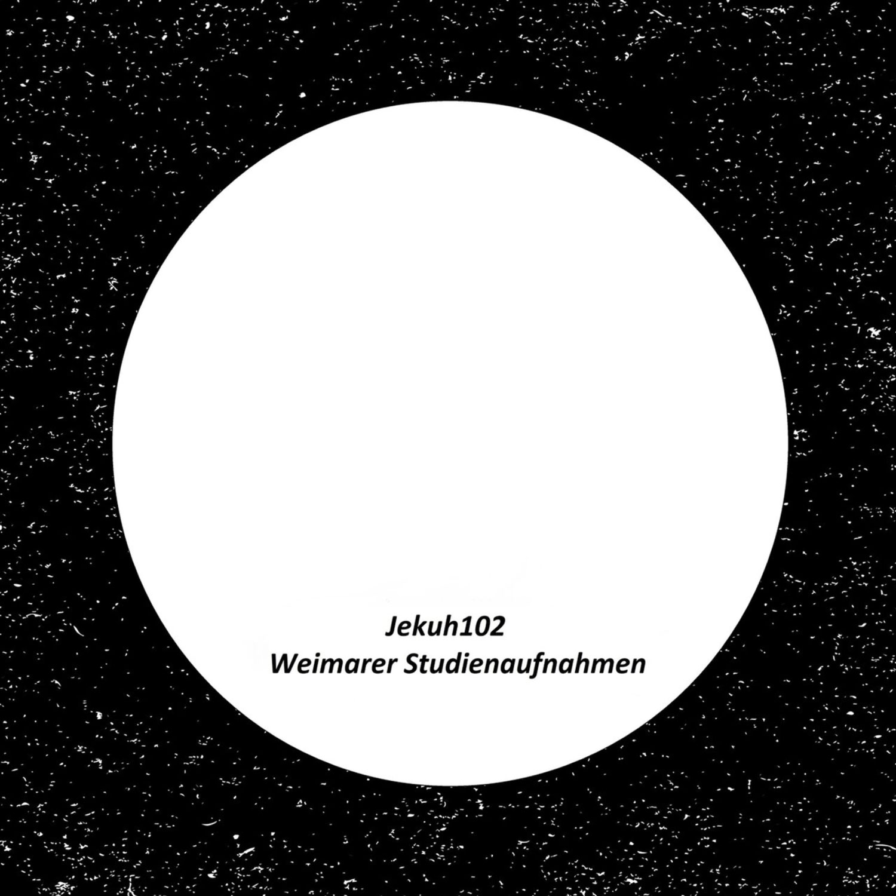
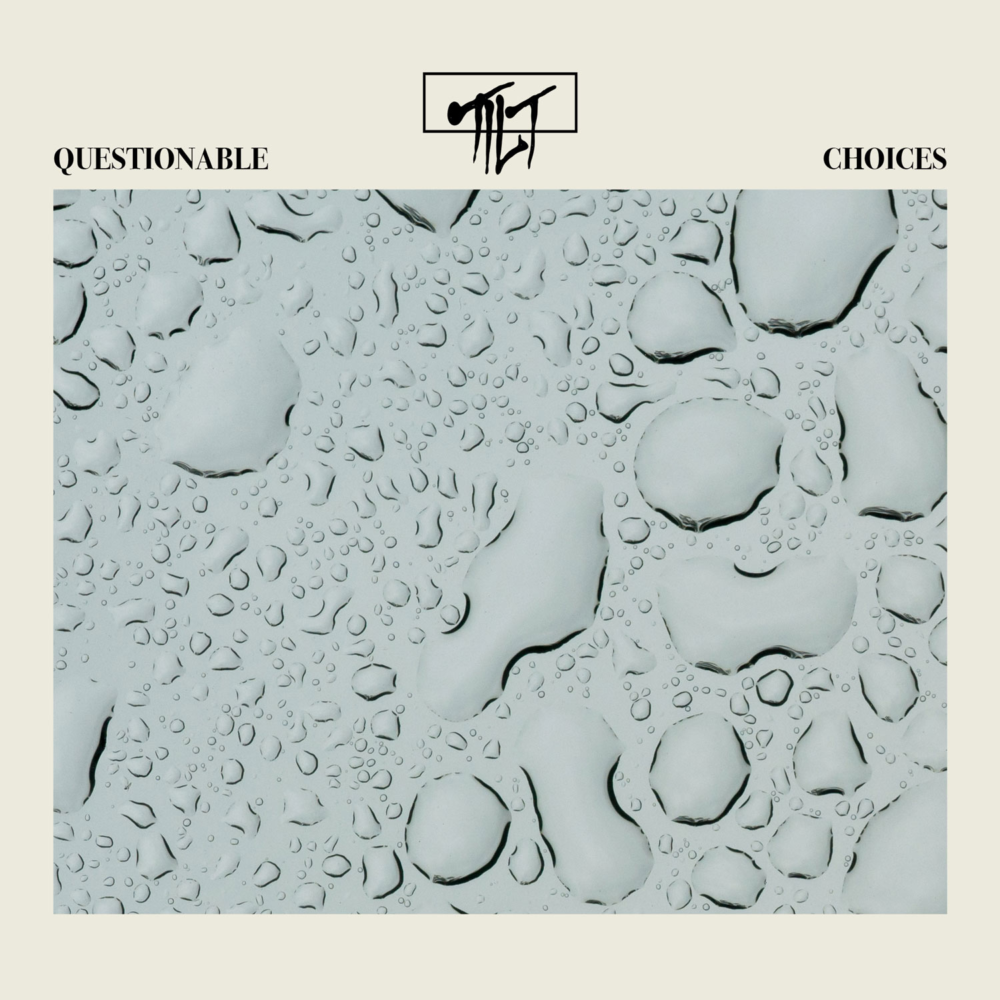

Helene
farbenpastell
Produktion aus Weimar, Klavier und Vocals sind live aufgenommen
[pop]
- Gitarren
- Produktion
- Recording Engineer
- Mixing Engineer
Faraé
rise up
Die Band und Mainvocals sind Live aufgenommen, Backingvocals sind Overdubs
[folk]
- Produktion
- Recording Engineer
- Mixing Engineer
Jerry Kuhn
Cosmic
Jazzquintett live aufgenommen in Weimar
[jazz]
- Recording Engineer
- Mixing Engineer

TILT
questionable choices
Aktuelles Bandprojekt.
[r`n`b]
- Gitarren
- Produktion
- Recording Engineer
- Mixing Engineer

Max Verclas' Ministry of Affection
flow
aktuelles Bandprojekt
[jazz]
- Gitarre
- Assistant Engineer